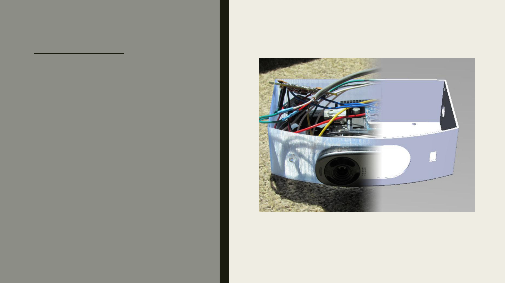

Angry Birds aka Bird
Collision Detection
and Recording
Every year, thousands of birds collide into the
windows of homes and businesses. This
autonomous system helps researchers
empirically collect and record the number of
bird collisions. With this system, researchers
would be able to determine the effectiveness
of different methods in reducing bird
collisions. During the course of the project, I
developed the Makefiles and config scripts,
contributed to the code base, and was the
Github maintainer. I helped create a
protective housing for the system in
SolidWorks and an IR remote that would turn
off the system when the windows were
cleaned to avoid recording false positives.
Summer 2014